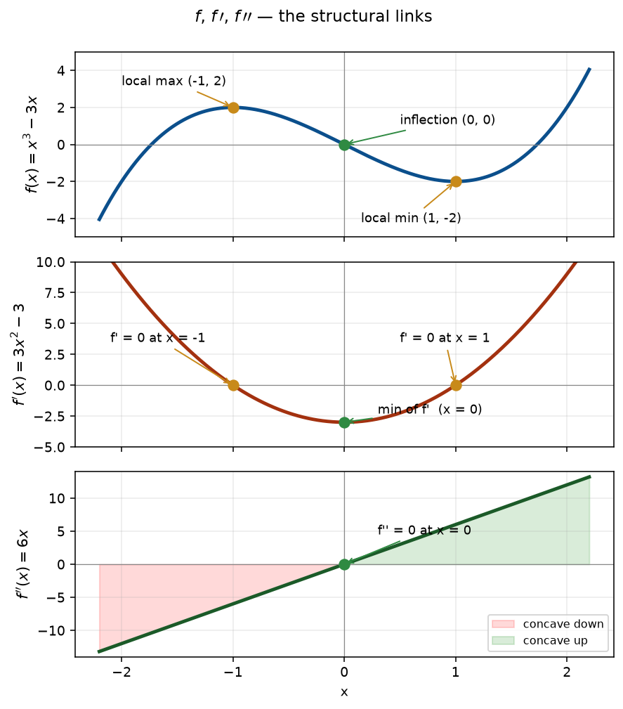

Up to now, we have been computing derivatives from an equation.
The syllabus now asks us to read them — go from the graph of \(f\) to the graphs of \(f'\) and \(f''\), and back.
This is a visual-literacy lesson. Every exam-style question in B1.1, B1.2, B1.4 can be answered by remembering the three structural links on the next slide.
Part 1 — From \(f\) to \(f'\) and \(f''\)
The three structural links
Extremum of \(f\) at \(x = a\) \(\;\Longleftrightarrow\;\) \(f'(a) = 0\) (or \(f'\) undefined)
Inflection of \(f\) at \(x = a\) \(\;\Longleftrightarrow\;\) \(f'\) has an extremum at \(x=a\) \(\;\Longleftrightarrow\;\) \(f''\) changes sign at \(x=a\)
Concavity of \(f\) at \(x=a\) is determined by the sign of \(f''(a)\): \(f''>0\) concave up, \(f''<0\) concave down
Memorise these three links and you can translate between \(f\), \(f'\), \(f''\) in either direction.
Example 1 — \(f(x) = x^3 - 3x\)
Compute, then see the three links at work.
Step 1. \(f'(x) = 3x^2 - 3\). Zeros at \(x = \pm 1\) — these are the \(x\)-coordinates of the extrema of \(f\).
Step 2. \(f''(x) = 6x\). Zero at \(x = 0\) with sign change — this is the \(x\)-coordinate of the inflection.
Step 3. \(f''<0\) for \(x<0\) (concave down) and \(f''>0\) for \(x>0\) (concave up).
Local max at \((-1, 2)\), local min at \((1, -2)\), inflection at \((0, 0)\).
Example 1 — the visual story

Notice: extrema of \(f\) line up with zeros of \(f'\); the inflection of \(f\) lines up with the minimum of \(f'\) and the zero of \(f''\).
Reversing direction
Exam questions often give you the graph of \(f'\) and ask about features of \(f\).
Same three links — read them backwards:
Zero of \(f'\) \(\Rightarrow\) candidate extremum of \(f\)
Sign of \(f'\) \(\Rightarrow\) increasing/decreasing behaviour of \(f\)
Extremum of \(f'\) \(\Rightarrow\) inflection of \(f\)
Example 2 — \(f'\) is the upward parabola below
Graph of \(f'(x) = (x-1)(x-3)\). Zeros at \(x=1\) and \(x=3\); vertex (minimum) at \(x=2\).
Step 1. \(f'=0\) at \(x = 1, 3\): candidates for extrema of \(f\).
Step 2. \(f'>0\) on \((-\infty, 1)\), \(f'<0\) on \((1, 3)\), \(f'>0\) on \((3, \infty)\).
Step 3. So \(f\) is increasing \(\to\) decreasing \(\to\) increasing. Local max at \(x=1\), local min at \(x=3\).
Step 4. \(f'\) has a minimum at \(x=2\) \(\Rightarrow\) \(f\) has an inflection at \(x=2\).
Local max at \(x=1\), local min at \(x=3\), inflection at \(x=2\).
Trick 1 — vertical tangents
Hidden critical point. A critical point of \(f\) happens where \(f'(a)=0\) or where \(f'(a)\) is undefined. A vertical tangent on \(f\) always makes \(f'\) blow up.
Diagnostic: if \(f\) has a vertical tangent at \(x=a\), the graph of \(f'\) has a vertical asymptote at \(x=a\).
Step 2. As \(x \to 0\), \(x^{2/3} \to 0^{+}\), so \(f'(x) \to +\infty\).
Step 3. \(f'\) is undefined at \(x = 0\) — so \(x=0\) is a critical point even though \(f'(0) \ne 0\).
\(f\) has a vertical tangent at the origin; \(f'\) has a vertical asymptote at \(x=0\).
The function \(f\) itself has no local max or min at \(x=0\) — it is strictly increasing. The "critical point" here flags a change in shape (steepness), not an extremum.
Trick 2 — \(f''(a)=0\) is not enough for an inflection
An inflection requires \(f''\) to change sign. If \(f''\) touches zero and bounces back without a sign change, there is no inflection.
Always check the sign of \(f''\) on both sides of your candidate.
Example 4 — does \(f(x) = x^4\) have an inflection at \(x=0\)?
Candidate B: \(f(x) = x^4 + 1\). Flatter near the minimum. Here \(f''(0) = 0\), but \(f''\) is still \(\ge 0\) everywhere, so concave up — still a local min.
Both satisfy every condition. Any function of the form \(a\,x^{2n}+1\) with \(a>0\), \(n\ge 1\) works — infinitely many.
Why? The three pieces of data pin down local shape, not the whole function. B1.4 wants you to notice exactly this.
Class task
Work each problem in your book. Final answers reveal on click.
C1 — Sketch \(f'\) for the parabola below
Hint: \(f\) is quadratic, so \(f'\) is linear. Pass through the vertex \(x\)-value with \(f'=0\).
\(f'(x) = 2x - 4\) — a line through \((2, 0)\) with slope \(2\).
C2 — Features of \(f\) from the graph of \(f'\)
The graph of \(f'(x)\) is an upward parabola with zeros at \(x = -1\) and \(x = 2\), vertex at \(x = 1/2\).
State: intervals of increase/decrease of \(f\); local extrema; inflection points.
\(f\) increases on \((-\infty, -1) \cup (2, \infty)\), decreases on \((-1, 2)\). Local max at \(x=-1\), local min at \(x=2\), inflection at \(x=1/2\).
C3 — Sketch two different \(f\)'s with the same data
\(f'(0) = 0\), \(f(0) = 1\), \(f\) is an even function, and \(f\) has a local minimum at \(x=0\).
Any even function with a local min of value \(1\) at the origin works — e.g. \(f(x) = x^2 + 1\), \(f(x) = x^4 + 1\), or \(f(x) = \cosh(x)\) (which has \(\cosh(0)=1\) and \(\cosh''(0)=1>0\)).
Homework
Bring written answers to the next session. Cover each answer before attempting the question.
H1 — \(f(x) = x^3 - 12x\): find and classify every extremum and inflection
Local max at \((-2, 16)\), local min at \((2, -16)\), inflection at \((0, 0)\).
H2 — \(f'(x)\) is a downward parabola with zeros at \(x=0\) and \(x=4\)
State the intervals where \(f\) is increasing/decreasing, the local extrema of \(f\), and any inflection of \(f\).
\(f\) decreases on \((-\infty, 0)\), increases on \((0, 4)\), decreases on \((4, \infty)\). Local min at \(x=0\), local max at \(x=4\), inflection at \(x=2\).
H3 — \(f(x) = x^{2/3}\): describe the behaviour of \(f'\) at the origin
\(f'(x) = \tfrac{2}{3}x^{-1/3}\): \(\;f'(x)\to +\infty\) as \(x\to 0^{+}\) and \(f'(x)\to -\infty\) as \(x\to 0^{-}\). The graph of \(f\) has a cusp at the origin; the graph of \(f'\) has a vertical asymptote at \(x=0\) with opposite-signed one-sided limits.
Compare with Example 3: \(y = x^{1/3}\) also has a vertical asymptote in its derivative at \(x=0\), but there \(f'\to +\infty\) from both sides — a vertical tangent, not a cusp. "Cusp" = slopes approach infinity from opposite signs; "vertical tangent" = same sign.
H4 — does \(f(x) = x^5\) have an inflection at \(x=0\)?
Compute \(f''\) and check the sign on both sides.
\(f''(x) = 20x^3\). For \(x<0\), \(f''<0\); for \(x>0\), \(f''>0\). Sign changes, so yes, inflection at \((0,0)\).
H5 — given \(f'(x) = (x-2)(x+1)\), where are the extrema of \(f\) and which type?
\(f'=0\) at \(x=-1\) and \(x=2\). Sign of \(f'\): positive on \((-\infty, -1)\), negative on \((-1, 2)\), positive on \((2, \infty)\). \(\;\)Local max at \(x=-1\), local min at \(x=2\).
H6 — sketch two different \(f\)'s given this data
\(f'<0\) on \((-\infty, 1)\), \(f'(1)=0\), \(f'>0\) on \((1, \infty)\), and \(f(1) = 0\).
Local min at \((1, 0)\) in both. Examples: \(f(x) = (x-1)^2\) and \(f(x) = (x-1)^4\).
H7 — if \(f\) has an inflection at \(x=3\), what is true about \(f'\) at \(x=3\)?
\(f'\) has a local extremum at \(x=3\) (because at an inflection of \(f\), the slope of \(f\) stops increasing and starts decreasing, or vice versa). Equivalently, \(f''(3) = 0\) with a sign change.